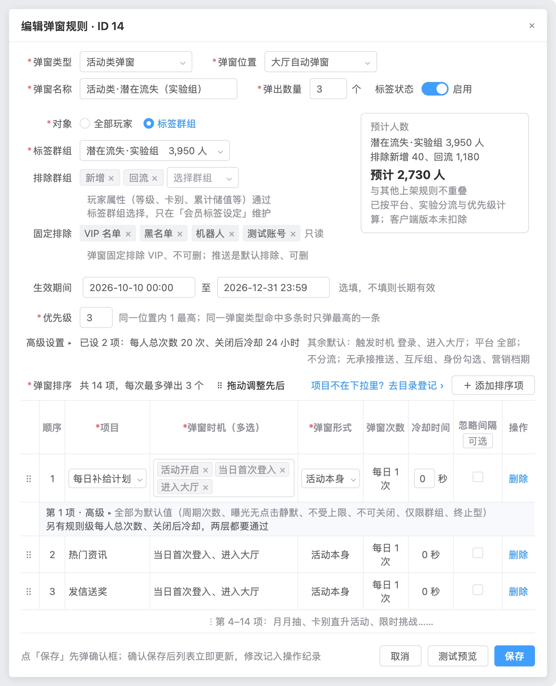
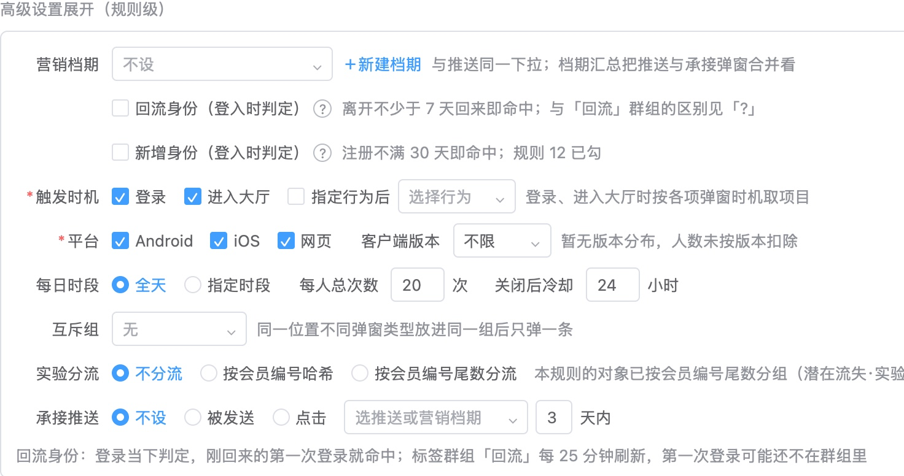
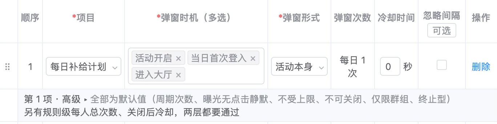
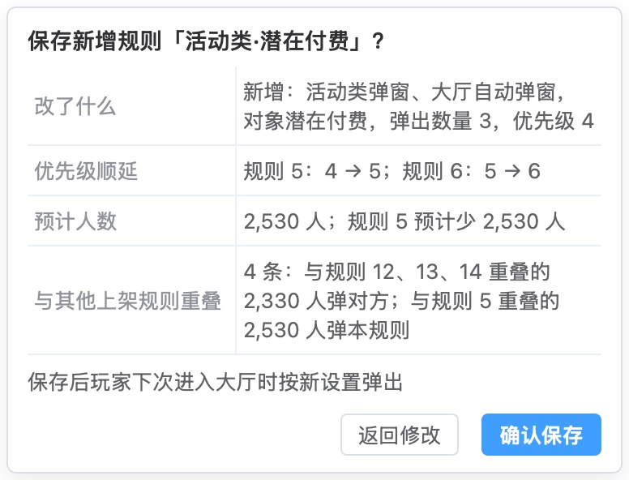
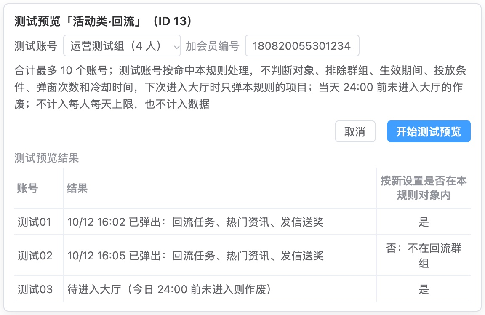
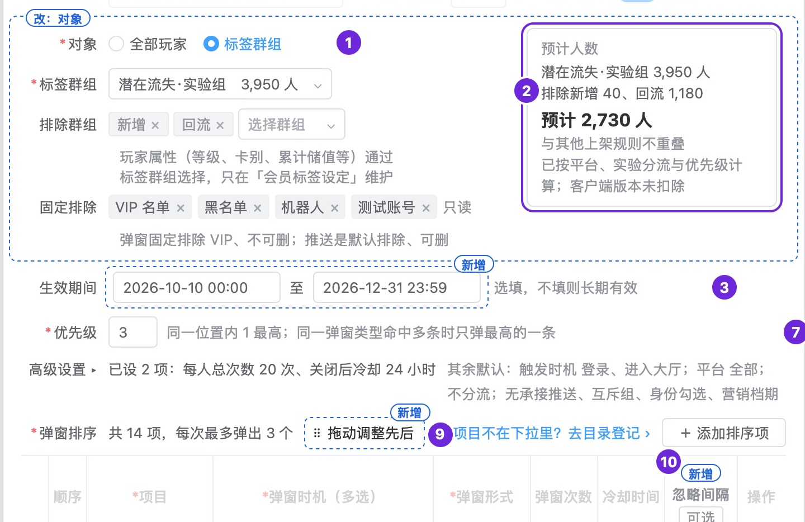

已判 0 / 12 条 · 判完了
弹窗标签推送系统 · 2026-10-16 · 第 1 份产出
第 1 份｜运营新建或修改一条弹窗规则，按这一页的分块，能不能顺着配完、分得清主次？
按下面 12 条标准逐条看 AI 评审的结论（每条只答「符合」或「不符合」），你只判同意或不同意；也可补标准里缺的条目。
页面＝原型「弹窗 › 编辑弹窗规则」（现有编辑表单没有截图，字段按列表页推断）；「框架」＝你认可的一条规则的组成「事件＋状态＋内容＋频次」。
01判断标准：6 条，1–4 看分块与主次，5–6 看保存这一步
信息结构与主次打开就看得出几块
1页面分成带标题的几块，运营打开就看得出一共几块、每块管什么
看哪里 整页从上到下|出处 写作标准：「先让读者看见一共多大、分几块、各块是什么」；业内做法：Braze、Firebase、OneSignal
业内顶尖产品怎么做
- Braze：建活动分五步，每步一个标题——撰写消息、安排投放、目标受众、转化事件、核对摘要并上线 Braze 文档
- Firebase：站内消息活动分四步——样式与内容、目标用户、排期、转化事件（选填） Firebase 文档
- OneSignal：站内消息按节配置——受众、消息设计、点击动作、触发条件、关闭方式、排期与频次 OneSignal 文档
我们原型对应的部分

编辑弹窗规则 · 整页（「高级设置」收起）
分块标题：我们这里没有。自上而下：类型、位置、名称、弹出数量、标签状态 → 对象、标签群组、排除群组、固定排除（右侧预计人数）→ 生效期间 → 优先级 →「高级设置 ▸」一行 →「弹窗排序」表 → 底部按钮。
AI 评审：否 主表单字段平铺无块标题，看不出共几块、各管什么
你判：
信息结构与主次同一组放一处
2各块先后跟随「事件＋状态＋内容＋频次」，同一组的设置放在一处
看哪里 各项设置所在位置|出处 你定的：框架；写作标准：「有读者已知的结构时，顺序跟随它」；业内做法：Firebase、OneSignal、Braze
我们原型对应的部分
| 事件 | 生效期间：主表单中部
触发时机、每日时段：高级设置
各项弹窗时机：弹窗排序表每行 |
|---|
| 状态 | 对象、标签群组、排除群组：主表单上部
平台与客户端版本、回流身份、新增身份：高级设置 |
|---|
| 内容 | 弹窗排序表：项目、弹窗形式、拖动排先后 |
|---|
| 频次 | 弹出数量：主表单第二行；优先级：主表单中部
每人总次数、关闭后冷却、互斥组：高级设置
各项次数、冷却：弹窗排序表每行及行尾「高级」 |
|---|
AI 评审：否 顺序非事件→状态→内容→频次；事件、频次各散在主表单、高级设置、排序表
你判：
信息结构与主次常用的展开，少用的收起
3每条规则都要定的设置在展开区；收起的「高级设置」里只有带默认值、多数规则不用改的项，收起时标出已改的值
看哪里 优先级下方「高级设置 ▸」|出处 业内做法：Nielsen Norman Group（渐进披露）、Firebase
业内顶尖产品怎么做
- Nielsen Norman Group：常用的放在首屏，专门、少用的放到二级界面，用户要时再打开；分界按任务分析与使用频次定 NN/g 文章
- Firebase：选填项逐个标「选填」，转化事件整步标「选填」 Firebase 文档
我们原型对应的部分
收起时：优先级下方一行

展开后（规则级）
收起区里有两项带 * 的必填，均有默认值：触发时机（登录、进入大厅）、平台（全部）。
AI 评审：是 收起区各项均有默认值，必填的触发时机、平台也有；收起行列出已设 2 项
你判：
措辞与指代次数、冷却管整条还是管单项
4每个次数、冷却设置看得出管哪一层（全站、整条规则、单个弹窗项），几层同时生效时页上写明怎么算
看哪里 高级设置、弹窗排序表每行|出处 业内做法：Braze、CleverTap
业内顶尖产品怎么做
- Braze：全站频次上限在「设置 › 频次上限规则」里定；每个活动的「投放控制」有「频次上限」开关，新建时默认开，关掉即不受限 Braze 文档
- CleverTap：全站上限在「设置 › 频次管理」里定；单个活动在「投放偏好」里选是否计入；几条上限同时适用时按最严的一条 CleverTap 文档
我们原型对应的部分

弹窗排序表 › 第 1 项及其「高级」一行
第 1 项「高级」展开
全站：「频率上限」页（每人每天上限、同次弹窗间隔），本页只在项上勾「不受每人每天弹窗上限」「忽略间隔」。规则级：弹出数量、每人总次数、关闭后冷却。项级：弹窗次数、冷却时间、曝光无点击静默。
AI 评审：否 只写规则级与项级两层都要通过；全站上限如何叠加未写，忽略间隔未标层级
你判：
状态与防错保存前核对与试看
5保存前能看到这次改了什么、影响多少人、与哪些规则重叠，并能先在测试账号上看到实际弹出
看哪里 底部「测试预览」「保存」|出处 你定的：使用者是运营、不设审批；业内做法：Braze、Firebase、OneSignal
我们原型对应的部分

点「保存」后的确认框（新增规则示例）

点「测试预览」后
配置时右侧「预计人数」随改动重算；与已上架规则重叠时逐条列出重叠人数和弹哪一条。
AI 评审：是 确认框列改动、人数、重叠规则；测试预览按新设置让测试账号实弹并列结果
你判：
功能覆盖配到一半能先存
6配到一半能先存下、不上线，之后接着配
看哪里 底部按钮|出处 业内做法：Firebase
业内顶尖产品怎么做
- Firebase：可「存为草稿」之后回来接着改，或「发布」按排期上线 Firebase 文档
- Braze、OneSignal：所查的文档页没写草稿
我们原型对应的部分
编辑弹窗规则 › 底部
存草稿：我们这里没有。底部只有取消、测试预览、保存；主表单第二行有「标签状态」启用／停用开关。
AI 评审：否 底部只有取消、测试预览、保存，无存草稿；停用开关未说明可存未配完的规则
你判：
业内做法都已打开官方文档核对。
02按评审维度补齐的标准：6 条
按评审维度表补齐上面没覆盖到的维度；每条小标前半是所属维度。
视觉完成度设计是否粗糙
7按对齐、间距分级、字号与字重层级、对比、组件一致、颜色与装饰、示例数据、基础排版八个检查点逐项看，没有一项不符合
看哪里 主图、右侧说明栏、图下状态小图|出处 你定的：「应该还需要有一个对原型设计是否粗糙的判断」（10/16）；业内做法：NN/g、Ant Design
业内顶尖产品怎么做（八个检查点判「是」的条件）
- 对齐：同一区块的文字共用一个左侧起点；表单标签按冒号对齐；数字取相同位数并右对齐 Ant Design 文档
- 间距分级：关系越近间距越小；组内、组间、块间分三档（纵向 8／16／24px），全页一致 Ant Design 文档
- 字号与字重层级：页标题、区块标题、字段名、正文、辅助说明各一级，一眼看得出先看哪里 NN/g 文章
- 对比：主操作与次要操作、必填与选填、可用与禁用，外观上分得出 NN/g 文章
- 组件一致：同一种控件全稿一个样式和用法，并与现有后台（Element UI 风格）一致；同一操作用同一个词 Ant Design 文档 NN/g 启发式第 4 条
- 颜色与装饰：一色一义、全稿固定；没有不承载信息的边框、底色、图标 NN/g 启发式第 8 条
- 示例数据：真实形态的示例值（活动名、人数、日期），全稿前后一致，玩家看到的文案用繁體；没有「xxx」「123」这类占位（项目内：原型任务说明）
- 基础排版：文字不截断、不溢出、不互相遮挡；折行在自然停顿处；并列几行有符号（项目内：你 10/12「这也太粗糙了吧」）
我们原型对应的部分
编辑弹窗规则 · 整页（「高级设置」展开后见第 3 条图）
- 对齐：左列字段名（弹窗类型至弹窗排序）与第二列字段名（弹窗位置、弹出数量）；「高级设置 ▸」一行的起点；排序表「弹窗次数」「冷却时间」列
- 间距分级：前两行之间；「对象」至「固定排除」各行与灰字说明；「生效期间」「优先级」「高级设置」三行；排序表各行
- 字号与字重层级：窗口标题「编辑弹窗规则 · ID 14」、字段名、输入值、灰字说明、「预计 2,730 人」、排序表表头
- 对比：底部「取消」「测试预览」「保存」；必填的红色 *；排序表第 1 行（可编辑）与第 2、3 行
- 组件一致：下拉、单选（对象）、开关（标签状态）、可删标签（排除群组、固定排除）、按钮（＋添加排序项）、文字链接（删除、去目录登记 ›）
- 颜色与装饰：蓝色（选中项、链接、「保存」）、红色 *、「预计人数」框的边框、第 1 项下的浅灰「高级」行
- 示例数据：规则名「活动类·潜在流失（实验组）」、群组「潜在流失·实验组 3,950 人」、生效期间、排序项「每日补给计划」「热门资讯」「发信送奖」及「第 4–14 项」一行
- 基础排版：「高级设置 ▸」后的摘要折成两行；「弹窗次数」列「每日 1 次」折行；第 1 项「高级」说明两行；底部灰字一行
AI 评审：否 第二列和表内数字没对齐，「每日 1／次」「计／算」断行，只读标签带删除叉
你判：
改动可辨新增、改动用同一种标记
8相对现有弹窗规则表单新增或改动的字段都用同一种标记标出，没标记的字段与现有后台一致
看哪里 页眉「改动以蓝色标出」与各字段|出处 写作标准：「写清是现状还是改后」；原型任务说明：「现有页面的改动标『新增』『改』」
依据的标准怎么写
- 写作标准：写清是现状还是改后——现状句写「现在」，做法句用「新建、加、改为」或写「改后」；单用「可」「能」会被读成已经能做
- 原型任务说明：现有页面的改动标「新增」「改」；交付时说得出和现状比改了什么
我们原型对应的部分
原型页眉

主图上的标记：蓝色虚线框加「改」「新增」
主图标了 4 处：「改：对象」（对象至预计人数整块）、「新增」生效期间、拖动调整先后、忽略间隔。说明栏写作「新增」、图上没有标记的：优先级（主表单），触发时机、平台与客户端版本、每日时段、每人总次数、关闭后冷却、互斥组、实验分流（高级设置内）。折叠的字段表在字段名后标「（改）」「（新增）」，或在规则说明开头写「现有」；上面这些新字段在字段表里也没有标。
AI 评审：否 优先级、高级设置、测试预览都是新增，却没有蓝框标记，与已标的几处不一致
你判：
方向一致保存流程不设审批
9保存与上线流程不含提交审核、等待审批这类环节
看哪里 底部按钮与保存流程|出处 你定的：「使用者：运营。不设审批」
依据的标准怎么写
- 你定的（推送系统后台集成需求「使用者」一行）：运营。不设审批：发送前一页确认（受众人数、各渠道预计条数、文案预览）＋发给测试账号＋操作纪录
我们原型对应的部分
编辑弹窗规则 › 底部
点「保存」后的确认框
底部是取消、测试预览、保存；确认框按钮是「返回修改」「确认保存」，框内写「保存后玩家下次进入大厅时按新设置弹出」。页上与字段表里没有提交审核、待审批的按钮或状态。
AI 评审：是 底部是取消、测试预览、保存，确认框只有返回修改、确认保存，没有审批
你判：
事实与依据推断的字段逐个标明
10按列表页推断、没有现有表单截图为据的字段，在页上逐个标明是推断
看哪里 页眉「现有表单没有截图，字段按列表页推断」及各字段|出处 写作标准：「事实只写已证实的；推断可以写，须写明依据和边界」
依据的标准怎么写
- 写作标准（不确定内容的处理）：事实只写已证实的，不猜；推断可以写，须写明依据和边界；推断不同会导致方案不同时，按推断分支写方案
我们原型对应的部分
原型页眉
主表单前两行
页眉一句总括。折叠的字段表在弹窗类型、弹窗位置、标签状态、弹窗时机、弹窗形式、弹窗次数、冷却时间的规则说明开头写「现有」；页上和字段表都没有逐个写哪些见于列表页、哪些是推断。
AI 评审：否 页眉只有一句总括，字段没有逐个标推断，字段表反而写「现有」
你判：
无多余内容说明栏只讲交互和规则
11主图和右侧说明栏里没有成本、开发量、来源这类标注，说明栏只解释不显而易见的交互和规则
看哪里 主图、右侧说明栏|出处 写作标准：「辅助标注不夹进核心内容」
依据的标准怎么写
- 写作标准：成本、来源这类标注会分散读者看核心内容的注意力时，单开一节集中写
- 你 10/12：「这些成本标签非要写可以单开一个篇幅去写，别影响读者看核心内容」
我们原型对应的部分
右侧说明栏第 15–18 条
说明栏共 18 条。带补充日期的：第 8 条（10/16 夜），第 15–18 条（10/15 夜，第 15 条另有 10/16 夜）；第 18 条写「较大开发」；图下「高级设置展开」小图的说明末尾带一个版本号。主图上没有这类标注。
AI 评审：否 说明栏多条带补充日期，承接推送一条写「较大开发」，图注带版本号
你判：
措辞与指代整页句式：开头与主语
12编辑弹窗规则页的说明栏和页上文字，没有成片以同一主语（如「运营」）或同一句式开头的句子，上下文已确定的主语没有逐句写出
看哪里 主表单、高级设置展开、保存确认框与测试预览、右侧说明栏|出处 你 10/15：「永远是运营在开头，这三个字真的有必要？」；措辞审查「整稿通读」
依据的标准怎么写
- 措辞审查「整稿通读」：逐句查完后通读全稿，同一开头、同一句式反复出现的删去或改写；全稿主体已经明确的不逐句写出，例如运营用的后台不写「运营在……」；补主语只补读者会读错或读不出的
- 你 10/15（当时原型改稿后有 63 处以「运营」开头）：「永远是运营在开头，这三个字真的有必要？真的认真检查措辞了吗？」
我们原型对应的部分
- 以「运营」开头的句子：主表单、高级设置、保存确认框、测试预览和说明栏都没有
- 说明栏 18 条的小标：第 3–8 条连续以「新增」开头——新增生效期间、新增触发时机、新增平台与客户端版本、新增每日时段、每人总次数、关闭后冷却、新增优先级与互斥组、新增实验分流；其余各条开头不同，如「对象改为选标签群组，并可选排除群组」「保存前看到预计人数」「拖动调整先后」「可先测试预览」
- 页上的说明句（原文）
「玩家属性（等级、卡别、累计储值等）通过标签群组选择，只在『会员标签设定』维护」
「弹窗固定排除 VIP、不可删；推送是默认排除、可删」
「同一位置内 1 最高；同一弹窗类型命中多条时只弹最高的一条」
「要让重叠的人弹本规则，把本规则的优先级改小」
「点『保存』先弹确认框；确认保存后列表立即更新，修改记入操作纪录」
- 两个保存确认框：末行都是「保存后玩家下次进入大厅时按新设置弹出」
AI 评审：否 说明栏连续六条小标以「新增」开头，成片同一开头；主语方面没问题
你判：
业内做法都已打开官方文档核对。
03参考案例：你推翻过的两份同类稿
例 1 原型整体结构看不出
- 你的原话
- 「我看了几遍也不知道整体这个html到底是什么结构……下面那十几页是按什么顺序，这些我都不知道」（10/14）
- 当时的稿
- 原型开头直接是「按任务走一遍」；17 页既不按后台侧栏顺序排，也没有分组标题
- 改后
- 全景兼目录 → 各页严格按侧栏顺序、加分组标题、页眉标位置 →「按任务走一遍」放在各页之后 → 附录
例 2 原型重点不突出，读着不轻松
- 你的原话
- 「阅读起来还是不太轻松呢，版面这块真的达到验收标准了吗」（10/14）
- 当时的稿
- 每页主图外摆 6–9 张状态小图；主图按真实密度画全、重点不突出；说明铺满整高
- 改后
- 每页分必读层（非重点调淡、紧挨的说明、至多 2 张必看状态）与折叠的查阅层
04怎么判
直接在页面上点：每条下面点「同意」或「不同意」（不同意可写一句理由），页面最下面可补还缺的标准；点完自动保存，判完在对话里说一声「判完了」即可。
05还缺什么，判完没有
原文：原型 · 编辑弹窗规则 请你判的 10 份产出